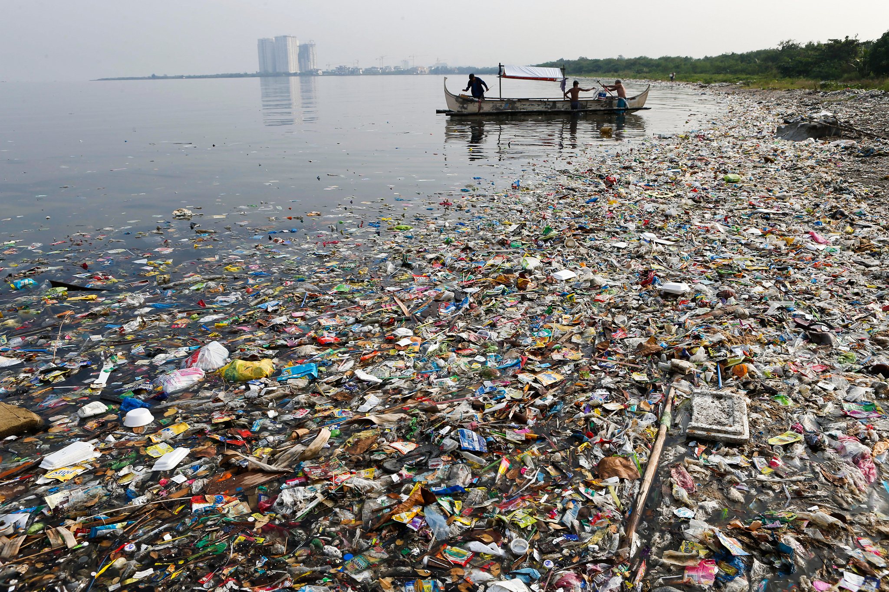

Why we MUST clean up our Earth!
Our Earth is in desperate need of our help! We need to save our home, our only planet for all the people around us! We are killing our planet, but some reach out to help our beloved Earth. Reach out, too! Now let me show why we must take care of our Earth:

All of our trash goes into the ocean and washes up somewhere. Turtles mistake plastic bags for jellyfish and get straws sucked up there noses which suffucates them. Some of our trash stays on land! In India, cows on the streets eat the trash and then produce toxic milk instead of the sweet milk we know. Even birds are having problems with trash. These are not the only animals having these problems. If this keeps up, turtles, cows, birds and other animals may be extinct!
Not just animals are suffering, but our planet too. Our beautiful planet Earth is turning into a dump. Trash covers our beaches, oceans, and cities. The Great Pacific Garbage Patch weighs 7 million tons, is twice the size of Texas, and is up to 9 feet deep. That's a lot of garbage!

But it's not just trash that is hurting our planet, there is pollution too! Air pollution from cars and factories and water pollution from oil spills and more.
All of the pollution has been effecting animals. These poor otters and birds get covered in oil when an oil spills occur. Many other animals also suffer from pollution. But is it just animals? People in China, India, and many other countries have to wear masks or suffer from asthma/lung disease.
These are not the only ways humans have harmed and polluted our planet. Cutting down trees hurts animal habitats. Pollution makes lasting mistakes that hurts our ecosystems. Animals and people all over the world suffer from our mistakes. This must end! Whatever you can do to help; from planting a tree to making a law; help our planet! Clean our only home! Clean it so our future generations can breathe clean air, see animals in nature, but above all; live a healthy life on earth, this earth, our only Home!